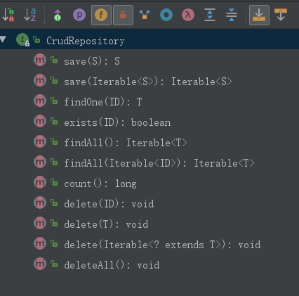

Spring Data Jpa 简介
JPA 是Java president API的简称,是SUN官方提供持久化标准规范.
JPA 有多种实现如:Hibernate,SpringDataJPA,OpenJPA等.
Spring Data Jpa 是JPA规范的一种实现,和spring框架可以很好的整合.下面介绍一下在spring boot中的应用.
通常的CURD使用Spring Data 有以下几个步骤：
基于以上步骤,分几个方面进行项目演示:
1.利用Spring Data Jpa 库的基本方法演示.
2.对查询方法的自定义和相关扩展.
3.对接口的自定义和相关扩展.
4.Spring Data存储库的自定义实现
本篇文章首先介绍一下上面步骤的前2点:
- 1.利用Spring Data Jpa 库的基本方法演示.
- 2.对查询方法的自定义和相关扩展.
基本查询
编辑build.gradle文件,增加Spring Data JPA 依赖
1
2compile "org.springframework.boot:spring-boot-starter-data-jpa:${springBootVersion}"
compile "mysql:mysql-connector-java:5.1.39"在Domain包内创建User实体类
1
2
3
4
5
6
7
8
9
10@Entity
@Table(name = "t_user")
public class User {
@Id
@GeneratedValue
private Long id;
private String userName;
private String password;
}- @Entity 注解User类为JPA 实体
- @Id 注解以便JPA将其识别为对象的ID
- id属性也可以用@GeneratedValue注解,标识自动生成ID
- @Table 用于指定实体映射的表名,缺省情况下默认使用类名作为映射的表名
- @column 还可以使用该注解定义字段的属性.
在repository包内创建接口文件 UserRepository 并继承CrudRepository
1
2public interface UserRepository extends CrudRepository<User,Long> {
}- User 为实体类中User类型,Long为User类中指定的Id类型
- Spring Data repository的核心接口是Repository,它需要使用Domain类的类型和Domain类中定义的id类型做为参数.
- CrudRepository 是继承自Repository的接口, 提供了一些基本CRUD方法.
- 如果使用分页数据查询可以使用PagingAndSortingRepository.基于CrudRepository 上抽象一些额外的方法来简化分页查询.关于PagingAndSortingRepository的使用后期的文章再详细介绍.
CrudRepository接口中提供的方法主要有:
1
2
3
4
5
6
7
8
9
10
11(1) 保存给定的实体.
(2) 保存给定的多个实体.
(3) 返回给定id的实体.
(4) 给定id的实体是否存在.
(5) 返回所有实体.
(6) 返回多个给定id的实体.
(7) 返回实体的数量.
(8) 删除给定id的实体.
(9) 删除给定的实体.
(10) 删除给定的多个实体.
(11) 删除所有实体.
对接口的使用
1
2
3
4
5
6
7
8
9
10
11@Service
public class UserService {
@Autowired
UserRepository userRepository;
public void SaveUser(User user){
userRepository.save(user);
}
}
- 自动注入UserRepository userRepository;
- 直接调用 userRepository 实例中的
对一些基本查询,存储库接口直接扩展Repository,CrudRepository或PagingAndSortingRepository 等即可直接使用.
自定义查询方法
CrudRepository提供的基本查询方法很多情况下是不能满足使用的,需要自定义查询.在UserRepository添加findUserById方法.
1 | public interface UserRepository extends CrudRepository<User, Long> { |
- 自定义查询根据方法名来自动生成Sql语句,语法主要为:
find…By, read…By, query…By, count…By, and get…By - 查询的属性间也可以用AND,OR,Between,LessThan,GreaterThan,Like等关键字连接.
- 方法解析器支持为单个属性（例如， findByLastnameIgnoreCase(…) ）或支持忽略大小写的类型（通常是String实例，例如findByLastnameAndFirstnameAllIgnoreCase(…) ）的所有属性设置IgnoreCase标志。 是否支持忽略情况可能因存储库而异。
- 如果需要排序,可以使用OrderBy并指定Asc或Desc
- 限制查询结果,可以使用first或top限制,也可以使用Distinct关键字.例如:
1 | interface PersonRepository extends Repository<User, Long> { |
- 还可以使用@Query 来定义查询.直接在@Query关键字后面定义查询语句,查询语句使用JPQL语法,如下例:查询的”表名”和”字段”是实体类的名称和属性.
- 查询语句中使用 ?1 占位参数值,多个参数顺序排列
- 如果要使用原生的sql语句需要指定参数nativeQuery=true
1 | public interface UserRepository extends JpaRepository<User, Long> { |
关于
- 3.对接口的自定义和相关扩展.
- 4.Spring Data存储库的自定义实现.
这两点内容下一篇文章再进行介绍.
水平有限,如有纰漏欢迎指正.